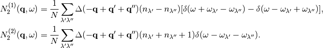

Command options¶
-d¶
Supercell with displacements are created. Using with --amplitude
option, atomic displacement distances are controlled. With this
option, files for supercells with displacements and disp_fc3.yaml
file are created.
--amplitude¶
Displacement distance. The default value depends on calculator. See Default displacement distance created.
--pa, --primitive_axis¶
Transformation matrix from a non-primitive cell to the primitive
cell. See phonopy PRIMITIVE_AXIS tag (--pa option) at
http://atztogo.github.io/phonopy/setting-tags.html#primitive-axis
--fc2¶
Read 2nd order force constants from fc2.hdf5.
--fc3¶
Read 3rd order force constants from fc3.hdf5.
--sym_fc2, --sym_fc3r, --tsym¶
These are used to symmetrize second- and third-order force
constants. --sym_fc2 and --sym_fc3r symmetrize those in real
space by the index exchange, respectively, and --tsym symmetrizes
by the translational invariance, respectively.
When those force constants are not read from the hdf5 files, symmetrized force constants in real space are written into those hdf5 files.
--dim¶
Supercell size is specified. See the detail at http://atztogo.github.io/phonopy/setting-tags.html#dim .
--dim_fc2¶
Larger supercell size to calculate harmonic force constants can be
used with these options. The larger supercell size is specified by
--dim_fc2. When running with --dim_fc2 option, a pair of
FORCES_fC2 and disp_fc2.yaml or fc2.hdf5 has to be
prepared.
The larger supercells for fc2 in POSCAR format are created
specifying this option with -d option as
POSCAR_FC2-xxxxx. Simultaneously disp_fc2.yaml is created,
which is necessary to generate fc2 from FORCES_FC2.
--mesh¶
Phonon triples are chosen on the grid points on the sampling mesh specified by this option. This mesh is made along reciprocal axes and is always Gamma-centered.
--br¶
Run calculation of lattice thermal conductivity tensor with the single
mode relaxation time approximation and linearized phonon Boltzmann
equation. Without specifying --gp option, thermal conductivity is
written into kappa-mxxx.hdf5.
--sigma¶
 value of Gaussian function for smearing when
calculating imaginary part of self energy. See the detail at
Brillouin zone summation.
value of Gaussian function for smearing when
calculating imaginary part of self energy. See the detail at
Brillouin zone summation.
Multiple values are also specified by space separated
numerical values. This is used when we want to test several
values simultaneously.
--thm¶
Tetrahedron method is used for calculation of imaginary part of self energy. This is the default option. Therefore it is not necessary to specify this unless both results by tetrahedron method and smearing method in one time execution are expected.
--tmax, --tmin, --tstep, --ts¶
Temperatures at equal interval are specified by --tmax,
--tmin, --tstep. See phonopy TMAX, TMIN, TSTEP
tags (--tmax, --tmin, --tstep options) at
http://atztogo.github.io/phonopy/setting-tags.html#tprop-tmin-tmax-tstep .
% phono3py --fc3 --fc2 --dim="2 2 2" -v --mesh="11 11 11" \
-c POSCAR-unitcell --br --tmin=100 --tmax=1000 --tstep=50
Specific temperatures are given by --ts.
% phono3py --fc3 --fc2 --dim="2 2 2" -v --mesh="11 11 11" \
-c POSCAR-unitcell --br --ts="200 300 400"
--gp¶
Grid points where imaginary part of self energy is calculated. Indices
of grid points are specified by space separated numbers. The mapping
table between grid points to its indices is obtained by running with
--loglevel=2 option.
--ga option can be used instead of --gp option. See --gp
section.
--ga¶
This option is used to specify grid points like --gp option but in
the different way. For example with --mesh="16 16 16", a q-point
of (0.5, 0.5, 0.5) is given by --ga="8 8 8". The values have to be
integers. If you want to specify the point on a path, --ga="0 0 0 1
1 1 2 2 2 3 3 3 ...", where each three values are recogninzed as a
grid point. The grid points given by --ga option are translated to
grid point indices as given by --gp option, and the values given
by --ga option will not be shown in log files.
--wgp¶
Irreducible grid point indices are written into
ir_grid_points.yaml. This information may be used when we want to
calculate imaginary part of self energy at each grid point in
conjunction with --gp option. grid_address-mxxx.hdf5 is also
written. This file contains all the grid points and their grid
addresses in integers. Q-points corresponding to grid points are
calculated divided these integers by sampling mesh numbers for
respective reciprocal axes.
--stp¶
Numbers of q-point triplets to be calculated for irreducible grid
points for specified sampling mesh numbers are shown. This can be used
to estimate how large a calculation is. Only those for specific grid
points are shown by using with --gp or --ga option.
--nac¶
Non-analytical term correction for harmonic phonons. Like as phonopy,
BORN file has to be put on the same directory. Always the default
value of unit conversion factor is used even if it is written in the
first line of BORN file.
--q_direction¶
This is used with --nac to specify the direction to polarize in
reciprocal space. See the detail at
http://atztogo.github.io/phonopy/setting-tags.html#q-direction .
--isotope¶
Phonon-isotope scattering is calculated.. Mass variance parameters are read from database of the natural abundance data for elements, which refers Laeter et al., Pure Appl. Chem., 75, 683 (2003)
% phono3py --dim="3 3 2" -v --mesh="32 32 20" -c POSCAR-unitcell --br --isotope
--mass_variances or --mv¶
This option is used to include isotope effect by reading specified
mass variance parameters. For example of GaN, this may be set like
--mv="1.97e-4 1.97e-4 0 0". The number of elements has to
correspond to the number of atoms in the primitive cell.
Isotope effect to thermal conductivity may be checked first running without isotope calculation:
% phono3py --dim="3 3 2" -v --mesh="32 32 20" -c POSCAR-unitcell --br
Then running with isotope calculation:
% phono3py --dim="3 3 2" -v --mesh="32 32 20" -c POSCAR-unitcell --br \
--read_gamma --mv="1.97e-4 1.97e-4 0 0"
In the result hdf5 file, currently isotope scattering strength is not
written out, i.e., gamma is still imaginary part of self energy of
ph-ph scattering.
--boundary_mfp, --bmfp¶
A most simple boundary scattering treatment is
implemented.  is just used as the scattering rate, where
is just used as the scattering rate, where
 is the group velocity and
is the group velocity and  is the boundary mean
free path. The value is given in micrometre. The default value, 1
metre, is just used to avoid divergence of phonon lifetime and the
contribution to the thermal conducitivity is considered negligible.
is the boundary mean
free path. The value is given in micrometre. The default value, 1
metre, is just used to avoid divergence of phonon lifetime and the
contribution to the thermal conducitivity is considered negligible.
--cf3¶
This is used to create FORCES_FC3. disp_fc3.yaml has to be
located at the current directory.
% phono3py --cf3 disp-{00001..00755}/vasprun.xml
--cf2¶
This is used to create FORCES_FC2. disp_fc2.yaml has to be
located at the current directory. This is
optional. FORCES_FC2 is necessary to run with --dim_fc2.
% phono3py --cf2 disp_fc2-{00001..00002}/vasprun.xml
--cutoff_fc3 or --cutoff_fc3_distance¶
This option is used to set elements of third-order force constants zero when any pair-distance among triplet of atoms is larger than the cut-off distance. This option may be useful to check interaction range of third-order force constants.
--cutoff_pair or --cutoff_pair_distance¶
This option is only used together with -d option. Using this
option, number of supercells with displacements is reduced and a
special disp_fc3.yaml is created.
Cut-off pair distance is used to cut-off configurations of pairs of
displacements. POSCAR-xxxxx are not created if distance between
pair of atoms to be displaced is larger than the cut-off pair
distance. The indexing of POSCAR-xxxxx files is same as the usual
case, i.e., without this option. But using this option, a lot of
indices are missing, which are not necessary to be put for creating
FORCES_THIRD. Only vasprun.xml‘s calculated for these
reduced number of POSCAR-xxxxx have to be given at phono3py --cf3
....
phono3py -d --cutpair=4
After running VASP calculations,
phono3py --cf3 all_calculated_vasprun_xmls
disp_fc3.yaml may be readable and helpful to understand this procedure.
--write_gamma¶
Imaginary part of self energy at harmonic phonon frequency
 (or twice of inverse phonon
lifetime) is written into file in hdf5 format. The result is written
into
(or twice of inverse phonon
lifetime) is written into file in hdf5 format. The result is written
into kappa-mxxx-dx-gx.hdf5 or kappa-mxxx-dx-gx-bx.hdf5 with
--bi option. With --sigma option, -sx is inserted in front
of .hdf5.
--read_gamma¶
Imaginary part of self energy at harmonic phonon frequency
(or twice of inverse phonon lifetime)
is read from kappa file in hdf5 format. Initially the usual
result file of kappa-mxxx-dx(-sx).hdf5 is searched. Unless it is
found, it tries to read kappa file for each grid point,
kappa-mxxx-dx-gx(-sx).hdf5. Then, similarly,
kappa-mxxx-dx-gx(-sx).hdf5 not found,
kappa-mxxx-dx-gx-bx(-sx).hdf5 files for band indices are searched.
--write_detailed_gamma¶
Q-point triplet contributions to imaginary part of self energy are
written into gamma_detail-mxxx-gx-sx.hdf5 file. This option is
only valid in calculation of imaginary part of self energy (--ise)
or linewidth (--lw) with --gp or --ga options.
In the output file in hdf5, following keys are used to extract the detailed information.
gamma_detail for --ise |
(temperature, sampling frequency point, band1, band2, band3, symmetry reduced set of triplets at a grid point) in THz |
gamma_detail for --lw |
(temperature, band1, band2, band3, symmetry reduced set of triplets at a grid point) in THz |
| mesh | Numbers of sampling mesh along reciprocal axes. |
frequency_point for --ise |
Sampling frequency points in THz, i.e.,  in in  |
| temperature | Temperatures in K |
| triplet | (symmetry reduced set of triplets at a grid point, 3), Triplets are given by the grid point indices (see below). |
| weight | Weight of each triplet to imaginary part of self energy |
Q-points corresponding to grid point indices are calculated from
grid addresses and sampling mesh numbers given in
grid_address-mxxx.hdf5 that is obtained by --wgp option. A
python script to obtain q-point triplets is shown below.
import h5py
import numpy as np
f = h5py.File("gamma_detail-mxxx-gx-sx.hdf5")
g = h5py.File("grid_address-mxxx.hdf5")
grid_address = f['grid_address'][:]
triplets = g['triplet'][:]
mesh = f['mesh'][:]
q = grid_address[triplets] / np.array(mesh, dtype='double')
Imaginary part of self energy or linewidth/2 is recovered by the following script:
import h5py
import numpy as np
f = h5py.File("gamma_detail-mxxx-gx-sx.hdf5")
temp = 1 # index of temperature
gamma_detail = f['gamma_detail'][:].sum(axis=-2).sum(axis=-2)
weight = f['weight'][:]
print np.dot(gamma_detail[temp], weight).sum(axis=-1) / gamma_detail.shape[-2]
--ise¶
Imaginary part of self energy is
calculated with respect to . The output is written to
gammas-mxxxx-gx-sx-tx-bx.dat in THz (without  ).
).
% phono3py --fc3 --fc2 --dim="2 2 2" --mesh="16 16 16" -c POSCAR-unitcell \
--nac --q_direction="1 0 0" --gp=0 --ise --bi="4 5, 6"
--lw¶
Linewidth  is calculated with
respect to temperature. The output is written to
is calculated with
respect to temperature. The output is written to
linewidth-mxxxx-gx-sx-bx.dat in THz (without ).
% phono3py --fc3 --fc2 --dim="2 2 2" --mesh="16 16 16" -c POSCAR-unitcell \
--nac --q_direction="1 0 0" --gp=0 --lw --bi="4 5, 6"
--jdos¶
Two classes of joint density of states (JDOS) are calculated. The
result is written into jdos-mxxxxxx-gx.dat in THz (without
). The first column is the frequency, and the second and
third columns are the values given as follows, respectively,
![&D_2^{(1)}(\mathbf{q}, \omega) = \frac{1}{N}
\sum_{\lambda_1,\lambda_2}
\left[\delta(\omega+\omega_{\lambda_1}-\omega_{\lambda_2}) +
\delta(\omega-\omega_{\lambda_1}+\omega_{\lambda_2}) \right], \\
&D_2^{(2)}(\mathbf{q}, \omega) = \frac{1}{N}
\sum_{\lambda_1,\lambda_2}\delta(\omega-\omega_{\lambda_1}
-\omega_{\lambda_2}).](_images/math/ed084583af4860c914a649baebf8f52a5f551995.png)
% phono3py --fc2 --dim="2 2 2" -c POSCAR-unitcell --mesh="16 16 16" \
--nac --jdos --ga="0 0 0 8 8 8"
When temperatures are specified, two classes of weighted JDOS are
calculated. The result is written into jdos-mxxxxxx-gx-txxx.dat,
where txxx shows the temperature. The first column is the
frequency, and the second and third columns are the values given as
follows, respectively,

% phono3py --fc2 --dim="2 2 2" -c POSCAR-unitcell --mesh="16 16 16" \
--nac --jdos --ga="0 0 0 8 8 8" --ts=300
--num_freq_points, --freq_pitch¶
For spectrum like calculations of imaginary part of self energy and
JDOS, number of sampling frequency points is controlled by
--num_freq_points or --freq_pitch.
--bi¶
Specify band indices. Imaginary part of self energy is calculated when
--lw is not specified. The output file name is like
gammas-mxxxxxx-gxx-bx.dat where bxbx... shows the band indices
used to be averaged. The calculated values at indices separated by
space are averaged, and those separated by comma are separately
calculated.
% phono3py --fc3 --fc2 --dim="2 2 2" --mesh="16 16 16" \
-c POSCAR-unitcell --nac --gp="34" --bi="4 5, 6"
--ave_pp¶
Averaged phonon-phonon interaction strength ( )
is used to calculate imaginary part of self energy. This option works
only when
)
is used to calculate imaginary part of self energy. This option works
only when --read_gamma and --br options are activated where
the averaged phonon-phonon interaction that is read from
kappa-mxxxxx.hdf5 file is used. Therefore the averaged
phonon-phonon interaction has to be stored before using this
option. The calculation result overwrites kappa-mxxxxx.hdf5
file. Therefore to use this option together with -o option is
strongly recommended.
First, run full conductivity calculation,
% phono3py --dim="3 3 2" -v --mesh="32 32 20" -c POSCAR-unitcell --br
Then
% phono3py --dim="3 3 2" -v --mesh="32 32 20" -c POSCAR-unitcell --br \
--read_gamma --ave_pp -o ave_pp
--const_ave_pp¶
Averaged phonon-phonon interaction () is
replaced by this constant value. Therefore third-order force constants
are not necessary to input. The physical unit of the value is
 .
.
% phono3py --dim="3 3 2" -v --mesh="32 32 20" -c POSCAR-unitcell --br \
--const_ave_pp=1e-10
--gruneisen¶
Mode-Gruneisen-parameters are calculated from fc3.
Mesh sampling mode:
% phono3py --fc3 --fc2 --dim="2 2 2" -v --mesh="16 16 16"
-c POSCAR-unitcell --nac --gruneisen
Band path mode:
% phono3py --fc3 --fc2 --dim="2 2 2" -v \
-c POSCAR-unitcell --nac --gruneisen --band="0 0 0 0 0 1/2"